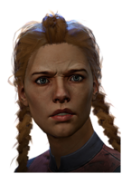

Выжившие
Дуайт Фэйрфилд
Выживание это ключ. Когда другие сотрудники, пораженные страхом, находятся в панике, Дуайт использует свой неприятный подростковый опыт. Ситуация меняется, и теперь другие должны следовать жестким инструкциям Дуайта, если они хотят выжить, так как он знает как исчезать

Личные навыки
Прояви себя
Лидер
Связи
Клодетт Морель

Личные навыки

Сам себе доктор

Познания в ботанике

Сострадание

Мэг Томас (англ. "Meg Thomas") — один из персонажей
игры Dead by Daylight женского пола в роли выжившего.
Доступен для выбора сразу после покупки основной
игры. Энергичный атлет, способная сбежать почти от
любого убийцы.
Мег Томас
Но бег в нынешней ситуации может привлечь тех существ, которые жаждут чужой боли. Но когда она начинает бежать от чего-либо, вместо того, чтобы стремиться к цели, она что-то понимает. Она понимает, что дело вовсе не в скорости. Это способ достижения финишной черты. Вероятно последним, но все еще живым. Она вводит в заблуждение независимо от того, что находится там, скользя сквозь преграды и страх, таким образом, оставаясь в живых

Личные навыки

Адреналин

Быстрый
и тихий

Спринт
Джейк Парк
Добровольцем наблюдателем, Джейк постигал тайны природы. Он здесь не для того, чтобы приручить что-либо - скорее чтобы стать диким. Уберите жестоких убийц, которые рыщут в поисках луж крови и Джейк будет чувствовать себя просто как дома. Отсутствие Wi-Fi. Никаких списков "Fortune 500". Ни отца, ни матери. Годы отречения от современной жизни дали Джейку новые ощущения и проблемы. Боль — это всего лишь препятствие, которое мешает вам принимать пищу. Неважно, кто или что охотится на вас, вы должны оставаться на шаг впереди. Борьба, гармония, адаптация. Просто не облегчайте другим задачу по устранению вас с лица земли.

Личные навыки

Спокойствие духа

Железная воля

Крушитель
Нея Карлссон
Нея сторонилась того, что для ее родителей являлось "нормальным". Вместо этого она нашла пристанище в скейт-парках, ее метка "Mashtyx" была видна почти всюду на всем протяжении ее нового родного городка, Нея превратила разрисовку правительственных зданий в отдельный вид спорта.
В конце концов родители Неи смирились с тем, что она может пропадать где-то несколько дней. Поскольку она шустра почти как кошка, она сможет избежать смертельных опасностей. Годы на скейтбордах оправдали достойную закалку. Перемещаться пригнувшись, избегая полиции, также поможет и от других опасностей. Единственный вопрос - есть ли у нее какой-то интерес в том, чтобы не сдаваться

Личные навыки

Уроки улиц

Ловкое приземление

Городской бег
Эйс Висконти
- Покупка платного DLC "Из плоти и грязи"
- Активация персонажа в магазине за 500 золотых клеток или 9000 радужных осколков

Личные навыки

Туз в рукаве

Повысить ставки

Игра в открытую
Уильям "Билл" Овербек

Личные навыки

Одолженное время

Оставленный позади

Несокрушимый
Dead By Daylight
Контакты:
Помощь:
предложения отправлят сюда
@mail: dbd-help@mail.ru
D
E
A
D
E
A
D
B
Y
Y
D
A
Y
L
I
G
H
T
A
Y
L
I
G
H
T